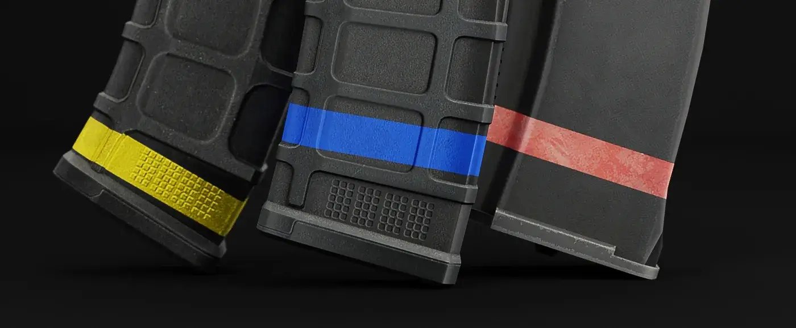

Mag Tape
- Downloads
- 118,153
- Favourites
- 1
- Mod lists
- 8
SPT/EFT is currently in a volatile state for content mods. This makes it very challenging to keep up with updating custom items. New scripts are added to gear, weapons, etc, every update. Stay on SPT 3.10 for the best experience when it comes to these kinds of mods.
The trader Painter is required for this mod
It’s VERY IMPORTANT that the trader is loaded BEFORE MagTape
They can be bought at Painter. Magazines will be added for the AK rifles and AR-10 platform in the future. Maybe a high-cap mag for AK and M4 too.
Use these taped mags to spot them easier on the ground. Also a great tool for keeping track of what ammo you have in them. I do not have the time to make these compatible with Realism (you can still use them though). You have to add them yourself with help from the author’s guide.

Installation: drag the folder in ZIP into your SPT install folder
I do have a Ko-Fi if you want to leave a donation.
Version
1.0.8
Updated to SPT 3.11
Version
1.0.7
Updated for SPT 3.10
Version
1.0.6
- Updated to SPT 3.9.0
- Changed all object IDs to MONGOID
Version
1.0.4
3.8.0 Update
nuked from forge, try source code url